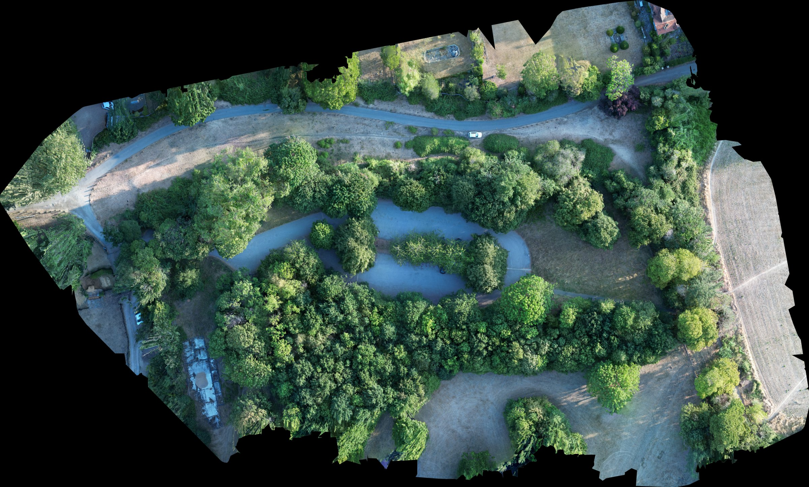
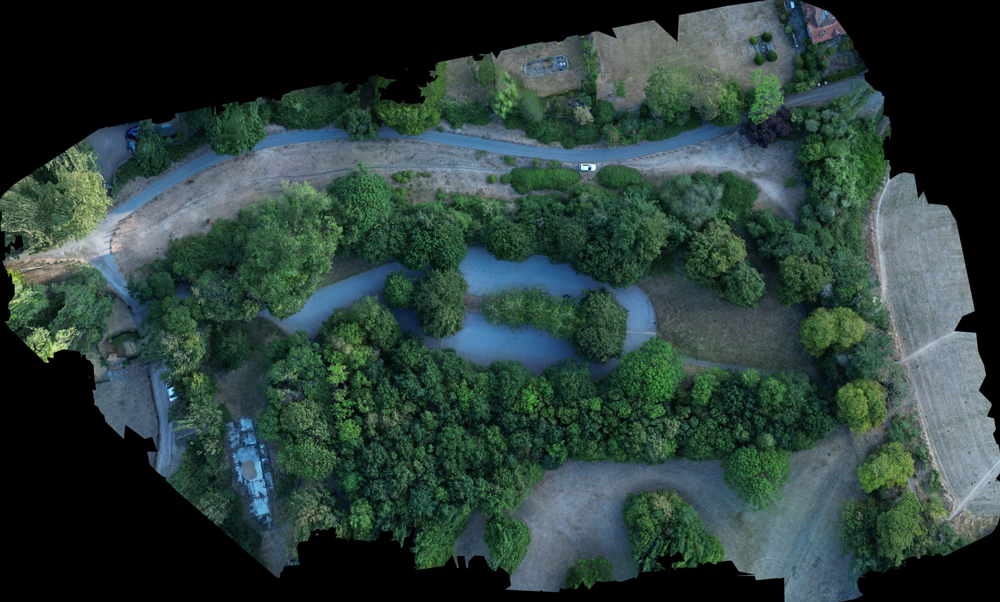
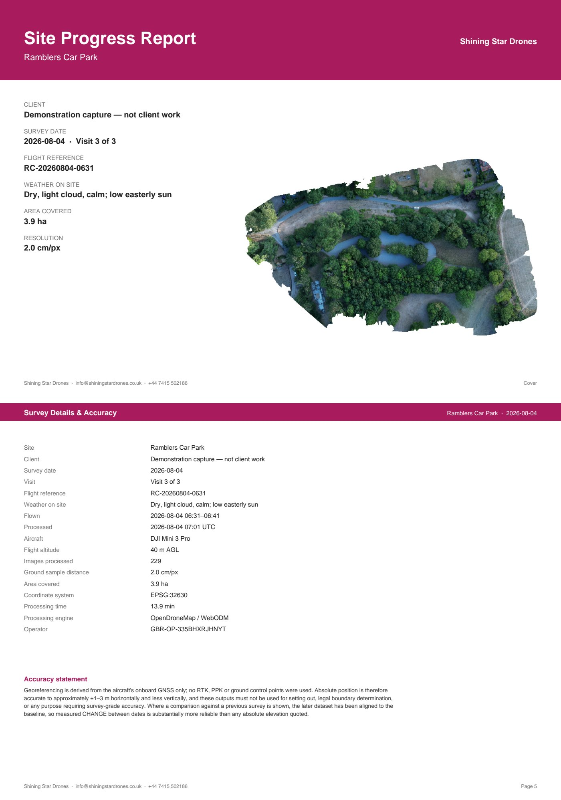
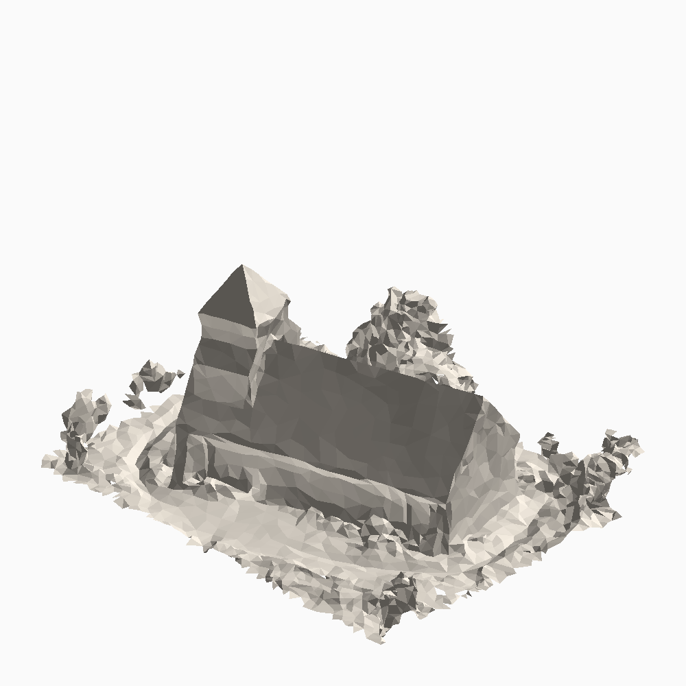

Construction progress monitoring · Slough · Berkshire · M4 corridor
The same flight, every month.
Nadir grid flown to a saved mission, so month three is directly comparable to month one. A dated site record for progress meetings and programme evidence — orthomosaic, labelled stills and a month-to-month pair, on your desk by the third working day of the month, before your progress meeting.
Cinematic and FPV still available — see the reel
The same mission, flown twice
Two real captures of the same site, flown to the same saved mission. Drag the divider. The two dates are a day apart, not a month — what is being demonstrated here is that the flight repeats, which is the part a monthly record depends on.


Both captures reproduced line spacing to within 2 cm (16.57 m and 16.43 m), on identical bearings, at the same 40 m altitude, with gimbal, ISO, shutter and white balance fixed. Both orthomosaics are rendered on one shared grid at 0.105 m/px, so the divider above compares like with like rather than two independently-framed maps. The site is 3.88 ha and the source orthomosaics are 2.0 cm/px, downsampled here for the comparison. A visual record, not survey-grade.
What's in a progress pack
Seven items, the same seven every visit, flown to the same mission file. Nothing on this list depends on kit I don't own.
- Nadir grid over the full site footprint, 70% side / 80% forward overlap
- Fixed N/E/S/W obliques flown from four marked positions
- Orthomosaic overview — visual record, not survey-grade
- 15–30 labelled stills — key elevations and whole-site
- Side-by-side comparison against the previous visit
- Cover sheet: site, date, weather, flight reference, visit number
- A PDF pack, built within 48 hours of a successful flight and with you by the third working day of the month
Where it lands is your choice. The pack goes into your Procore, Autodesk Construction Cloud, SharePoint or Dropbox folder, filed under the visit date — not as an attachment in my email for someone to re-file. Tell me the folder at the first visit and it goes to the same place every month.

Download the sample · PDF, 6 pages, 15 MB
This sample comes from a demonstration flight that was nadir-only, so it carries five of the seven — the capture record, the orthomosaic, the month-to-month comparison, the cover sheet and the turnaround, plus a surface model. The obliques and the labelled stills need an oblique flight to produce and are not in it.
A building as a model
Flown as a five-angle mission rather than a nadir grid, the same aircraft builds a navigable photogrammetric model — useful for showing a client an elevation they can’t stand in front of, or briefing a subcontractor on a roof. It is a visual model, not a measured one.

This is a different site from the car park above, flown on a different mission — a model and a map want opposite things from a flight, so a site that needs both needs both flown. A survey mission covers a box rather than a building, so the raw model arrives with the field and treeline attached; what loads here is cropped to the church. No ground control was set, so the model carries no stated coordinate accuracy and nothing should be measured off it.
What you receive, and what it costs
Every price carries a unit and a scope. The two rows marked hired kit are real services quoted per job — they are not flown on my own aircraft, and I don't price them as though they were.
Scroll the table sideways →
| Job | Flown as | You receive | Stated accuracy | Typical price |
|---|---|---|---|---|
| Construction progress pack | Nadir grid flown to a saved mission, plus obliques from four marked positions | Orthomosaic JPG, 15–30 labelled stills, month-to-month pair, PDF pack | Visual record, not survey-grade | £350–£500 one-off £400–£650 per site per month |
| Roof & building inspection | Manual obliques and close passes, no contact | Labelled 4K stills + PDF defect sheet, numbered and located on a plan | Visual condition record, not a structural survey | From £300 per building one visit |
| Site overview & marketing stills | Obliques + panorama | Graded stills, optional short cut | — | From £300 per site visit |
| Topographic survey / stockpile volumesHired kit | Hired RTK aircraft + ground control | GeoTIFF, point cloud, DXF linework, written accuracy statement | Quoted per job with the accuracy spec attached | POA |
| Thermal / solar inspectionHired kit | Hired thermal payload | Radiometric imagery, per-panel fault map | Quoted per job | POA |
Send a site address and roughly how big it is and the reply is a price, not a question. Monthly work is booked as a standing visit, not a contract you can't leave.
"Why not just get the site engineer to fly it?"
Fair question, and worth answering properly. Someone on site with a Mavic will get you photographs. What they will not get you is a comparison — and the comparison is the whole product.
- The flight is a file, not a decision
- Every visit flies the same saved mission — same lines, same heights, same camera angles. On the two dates measured, the flown line spacing repeated to within 2 cm, checked out of the image metadata afterwards rather than assumed. Fly it by hand and the geometry is different every month, so the two maps never quite line up and the comparison quietly stops meaning anything.
- Each month is tied back to the first
- Every visit after the baseline is aligned to it before anything is measured. Without that step, GPS drift alone moves the whole site between dates — a metre-scale shift that looks exactly like progress and isn't.
- There is a number attached
- The agreement between repeat visits is stated in percentiles, measured on a real repeat flight — see below. A phone gallery has no error figure, and in a programme dispute the number is the part that carries weight.
- It doesn't come out of your team's week
- The CAA authorisation, the £10m public liability, the RAMS, the airspace check and the induction sit with me. So does the morning it takes, the reflight when the weather turns, and the processing. Your site engineer has a programme to run.
The honest version of the trade: if all you need is a picture of the site this week, someone on site with a drone is cheaper and faster, and you should do that. Plenty of sites should.
This is worth paying for when you need this month set against last month, on the same footing, with a date and a method behind it — for a progress meeting, an interim application, or the moment somebody disputes what was built and when. That is a different job, and it is not one a busy engineer with a Mavic can do repeatably.
The same logic decides the other direction: where a job genuinely needs certified volumes or setting-out accuracy, this kit is the wrong tool and I say so — see the section below, and the hired kit rows in the table above.
The part most suppliers leave out
What this kit will and won't tell you
Standard visits fly a DJI Mini 3 Pro. That gives a clean, geometrically consistent visual record — enough for a progress meeting, a programme dispute, a roof condition check, or briefing a client. It is not survey-grade. It will not give you certified volumes or centimetre accuracy, and I won't put a number on a stockpile from it. Where a job needs that, I hire an RTK aircraft, set ground control, and the accuracy statement comes with the file.
Here is mine.
On bare, hard ground, repeat surveys of the same site agree to within 0.24 m for 90% of the surface and 0.31 m for 95%.
Measured on a validation site, 4 August 2026, by flying it twice and comparing. Bare and hard ground only — vegetation and tree canopy are several times worse. Percentiles, not RMS: the error distribution has heavy tails. Change is quoted relative to the baseline survey, never as absolute levels. Not survey-grade, and not for setting out.
The full study — method, the surfaces it does not apply to, and the results that went badly — how accurate is a sub-250 g drone, really?
If a supplier quotes you survey accuracy off a sub-250 g drone, ask them for the accuracy statement.
Why month three compares to month one
The reason the comparison holds is procedural, not equipment.
Saved mission, identical waypoints, heights and camera angles every visit. Obliques from four marked positions, flown at the same distances. Visits booked for the same time of day where weather allows, so shadows fall the same way. Same labels, same file naming, month to month.
A site that changes is easy to photograph. A site you can compare needs the flight to stop being a decision.
Who this is for
- Main contractor / PM
- Monthly progress pack for site meetings and programme disputes — supporting material for interim applications, not a substitute for the QS measure.
- QS / commercial
- White-label or supporting capture for claims packs and applications — you keep the client relationship.
Two, deliberately. Groundworks, survey practices, quarry operators and FM teams are all worked with and quoted per job — they are on the capability statement — but the monthly progress pack is built around the site team and the commercial team, and it is better for being built around two buyers rather than six.
Safe and legal on a live site
- Licence
- GVC qualified · CAA authorised for commercial operations
- Insurance
- £10m public liability, certificate on request
- Compliance
- Commercial operator cover meeting the CAA's requirement under Regulation (EC) 785/2004
- Operator
- CAA Operator ID on request
- Before
- RAMS supplied ahead of the visit; works to your site induction
- On the day
- Flight window agreed with the site manager
- Permission
- No flight without written permission
- Airspace
- Pre-flight check including Heathrow-area and Windsor restrictions
The base sits under Heathrow's controlled airspace and near Windsor restrictions. Knowing exactly where that bites — and where it doesn't — is the difference between a booked visit and a wasted morning. Windsor town and Eton are closed; Slough, Maidenhead and the M4 industrial belt are the working catchment.
Coverage
- Base
- Slough SL1, Berkshire
- Travel
- 1 hour included; beyond that £20/hr
- Areas
- Berkshire · Bucks · Slough–Maidenhead–M4 · Surrey · Herts · Greater London
- Beyond
- By arrangement, travel quoted separately
Enough detail here and the reply is a price, not a question.
I read these myself and answer within one working day.
Rather talk first?
Capability statement
The one-page version for procurement and pre-qualification — read it here.
On file, on request
£10m public liability certificate · EC 785/2004 compliance confirmation · CAA Operator ID · RAMS · GVC certificate.